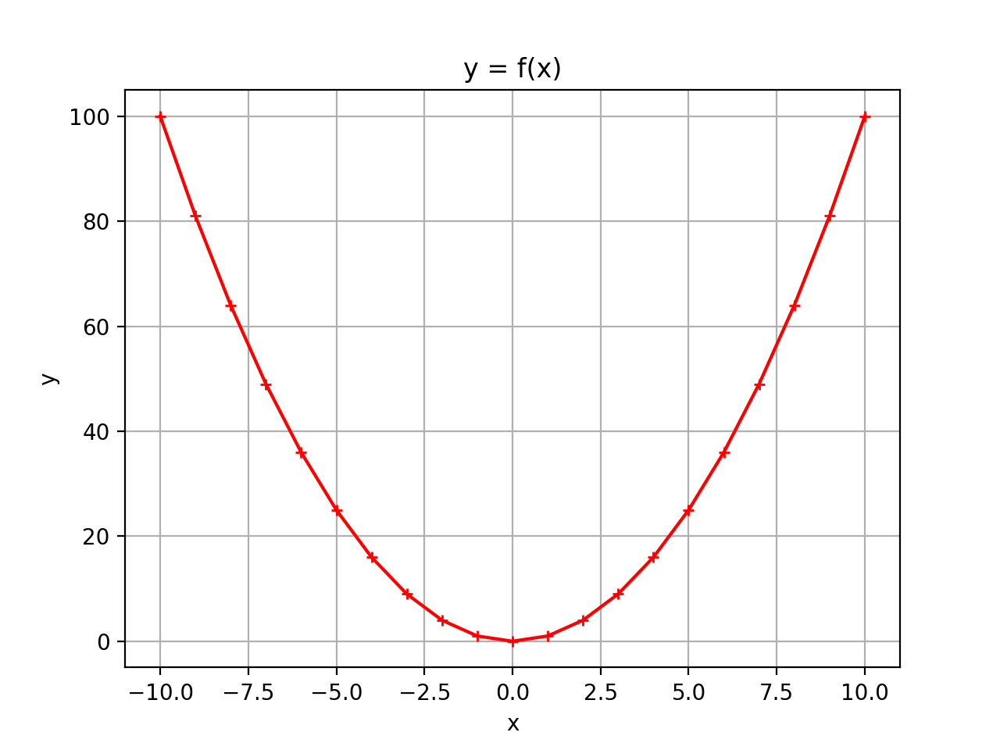

Tuples et listes avec Python#
Introduction#
Il est possible de "stocker" plusieurs grandeurs dans une même structure, ce type de structure est appelé une séquence : ensemble fini et ordonné d'éléments indicés de \(0\) à \(n-1\) (si la séquence comporte \(n\) éléments).
Rappel : nous avons vu dans les chapitres précédents qu'il est possible d'accéder à n'importe quel caractère d'une chaîne de caractères à l'aide de son indice de position (le premier caractère étant indexé 0) :
Nous avons vu également qu'il est possible de balayer l'ensemble des caractères de la chaîne de caractères :
Une chaîne de caractère est donc bien un type de structure finie et ordonnée d'éléments indexés de 0 à len(chaine)-1, c'est à dire une séquence.
Il existe d'autres types de séquences que nous allons découvrir ici, notamment les n-uplets (encore appelés tuples) et les listes.
Les tuples#
Définition#
Un tuple est une collection d’éléments séparés par des virgules et généralement entouré de parenthèses même si ce n’est pas une obligation. Cela permet toutefois d’améliorer la lisibilité du code. Le tuple est une séquence immuable (une fois déclaré, le tuple ne peut plus être modifié) d’objets indicés qui peuvent être de tout type : entiers, flottants, chaînes de caractères…
Afficher un élément d'un tuple#
Pour afficher un élément, il faut s'aider de son indice élément.Comme pour les chaines de caractères, pour un tuple de longueur \(n\), le premier élément porte l'indice 0 et le dernier indice porte l'indice $n-1.
Exemple : pour afficher le deuxième élément, la commande est la suivante :
Parcourir un tuple#
Comme pour une chaine de caractères, il est possible de parcourir directement les éléments du tuple à l'aide d'une boucle for :
Ou bien, Il est possible de parcourir les éléments d'un tuple à l'aide des indices. De plus, comme avec une chaine de caractères, la fonction len() prenant un tuple comme argument renvoie le nombre d'éléments
(longueur) du tuple.
Autre possibilité :
Immuabilité d'un tuple#
Essayons de modifier un tuple prédéfini :
On constate que python refuse effectivement la modification d'un élément du tuple :
Quel peut être l'intérêt d'un tuple ?#
Nous souhaitons écrire une fonction qui prend en argument deux nombres entiers et nous renvoie le quotient et le reste de la division euclidienne du premier nombre par le second. Or nous avons vu qu'une fonction ne retourne qu'un seul élément !
Il est possible de solutionner ce problème en demandant à la fonction de renvoyer le résultat sous forme d'un tuple (quotient, reste).
Les listes#
Définition#
Tout comme un tuple, une liste est une collection d’informations qui peuvent être de même type ou de type différent. Les éléments de la liste sont séparés par des virgules et placés entre des crochets. La grande différence entre une liste et un tuple, c'est que la liste est modifiable.
Création de listes par affectation :
Affichage des divers éléments de la liste#
Comme pour les tuples, chaque élément est repéré dans la liste par un indice. Là aussi, l'indexation commence à 0 et non pas à 1.
Il est donc possible d'afficher un par un l'ensemble des éléments d'une liste grâce à leur indice à l'aide d'une boucle for :
Il est possible de balayer directement les éléments d'une liste (comme pour les chaines de caractères):
Ajout d'éléments dans une liste#
L'opérateur +#
Une autre méthode consiste à concaténer notre liste existante avec une autre liste. L'intérêt est que plusieurs éléments peuvent être rajoutés en même temps :
Attention à l’ordre dans lequel les chaines sont concaténées. Dans l'exemple qui suit le mois d'octobre sera rajouté en début de liste et non en fin de liste :
La méthode append()#
Pour rajouter un élément dans une liste, par exemple septembre à notre liste liste_mois, il est possible d’utiliser la méthode append() (to append signifie « ajouter »). L'élément est ajouté en fin de liste. La méthode append() ne permet d'ajouter qu'un seul élément à la fois.
La méthode extend()#
Il est également possible d'utiliser la méthode extend() qui permet de concaténer non pas un seul élément mais une seconde liste.
Test d'appartenance#
On peut tester si un élément se trouve dans une liste grâce à l'instruction in :
Suppression d'éléments dans une liste#
Pour supprimer un élément dans une liste, il est possible d'utiliser les trois suivantes.
La commande del#
Pour supprimer un élément dans une liste, par exemple l'élément de rang i, il est possible d’utiliser la commande del (del signifie « delete »).
La méthode remove()#
Il est possible de supprimer un élément dans un tableau à partir non pas de son indice, mais de sa valeur. La méthode remove() supprime uniquement la première occurrence trouvée.
Si l'élément n'est pas trouvé, un message d'erreur est retourné et le programme s'arrête, donc bien s'assurer auparavant que l'élément à supprimer est présent dans la liste.
Nous donne :
On peut résoudre le problème en utilisant la fonction in de la manière suivante :
La méthode pop()#
La méthode pop() utilisée sans argument retire le dernier élément de la liste.
Exemple :
Quand la méthode pop()possède un argument, celui-ci désigne l'indice de l'élément à supprimer.
Remarque : si l'argument donné à la méthode pop() correspond à un indice qui dépasse la longueur de la liste. Il se produit une erreur.
Construction d'une liste par compréhension#
Les compréhensions de listes fournissent un moyen de construire des listes de manière très concise. Une compréhension de liste consiste à placer entre crochets une expression suivie par une boucle for (ou plusieurs boucles imbriquées) et éventuellement un test conditionnel pour filtrer.
Exemple 1 : pour réaliser une liste contenant le carré des nombres de 1 à 10 :
Exemple 2 : pour filtrer la liste précédente en ne prenant que le carré des nombres paires.
Exemple 3 : création de la liste des caractères qui se trouvent dans une chaîne de caractère, dans l'ordre où ils sont rencontrés.
Exemple 4 : création de la liste des voyelles qui se trouvent dans une chaîne de caractère (itérable)
Des listes de listes pour représenter des matrices#
Voici un exemple de liste de listes :
Pour des raisons de lisibilité, il est cependant plus commode de la représenter de la manière suivante, sous forme matricielle :
Pour cibler un élément de la matrice, on peut utiliser la notation avec des doubles crochets : matrice[ligne][colonne]
Attention : les numéros de ligne et colonne démarrent à 0.
Pour affecter à cet élément la valeur 10 :
Pour parcourir l'ensemble des éléments de la matrice, il faut utiliser 2 boucles for imbriquées :
Pour aller plus loin#
Trancher des listes (Slices)#
On peut découper une partie de la liste :
lst[a:b]renvoie la sous-liste des éléments de rangaàb – 1(l'élément de rangbest exclu).lst[:a]renvoie la sous-liste des éléments de rang0àa – 1(l'élément de rangaest exclu).lst[a:]renvoie la sous-liste des éléments de rangainclus jusqu'au dernier.
Des méthodes pour inverser et trier des listes#
La méthode reverse() permet d'inverser une liste et la méthode sort() permet de trier la liste :
Documentation en ligne python#
https://docs.python.org/fr/3/tutorial/datastructures.html
Exemple de tracé d'une courbe en utilisant des listes et la bibliothèque matplotlib.pyplot#
Le programme suivant trace la courbe \(y=f(x²)\) en utilisant la bibliothèque matplolib.pyplot.
Pour cela il est nécessaire de remplir une liste des abscisses des points de la courbe nommée x et une liste des ordonnées nommée y :

Exercices#
Exercice n°1 :#
Écrire un programme Python qui permet de :
- Définir une liste (nommée liste) contenant les nombres : 45, 17, 89, 38, 10 et 74 dans cet ordre ;
- Afficher la liste obtenue ;
- Ajouter l'élément 12 à la liste et afficher la liste ;
- Afficher l'indice de l'élément 10 ;
- Enlever l'élément 38 et afficher la liste obtenue ;
- Afficher la sous-liste du 2ème au 3ème élément ;
Exercice n°2 :#
Écrire un programme qui demande à un élève le nombre de notes ainsi que les notes elles-mêmes. Le programme stockera toutes les notes dans un tableau qu'il affichera.
Exercice n°3 :#
Écrire une fonction qui prend en argument un tableau et qui retourne la somme des différents éléments.
Exemple :
Exercice n°4 :#
Écrire une fonction genere_tab() qui prend en argument la taille du tableau et qui génère un tableau où les nombres
vont croissant par pas de 1 à partir de 0.
Exemple :
lst = genere_tab(10) génère une liste lst telle que : lst = [0, 1 ,2, 3, 4, 5, 6, 7, 8, 9]
Exercice n°5 :#
On donne les chaînes suivantes :
Écrire un programme nous permettant de créer la liste suivante :
à partir de chaine1 et chaine2Exercice n°6 :#
Écrire une fonction occurence() qui prend en argument un tableau et une valeur de type quelconque et retourne le nombre d'occurrences du 2nd argument dans le tableau.
Exercice n°7 :#
Écrire une fonction extremes() qui prend en argument un tableau d'entiers et renvoie un tuple comportant la valeur minimale, moyenne et maximale du tableau.
Exercice n°8 :#
Écrire une fonction genere_tab qui prend en argument 2 entiers et retourne un tableau de longueur égale au 1er argument et dont chaque élément est un nombre entier aléatoire compris entre 0 et le 2nd argument (inclus)